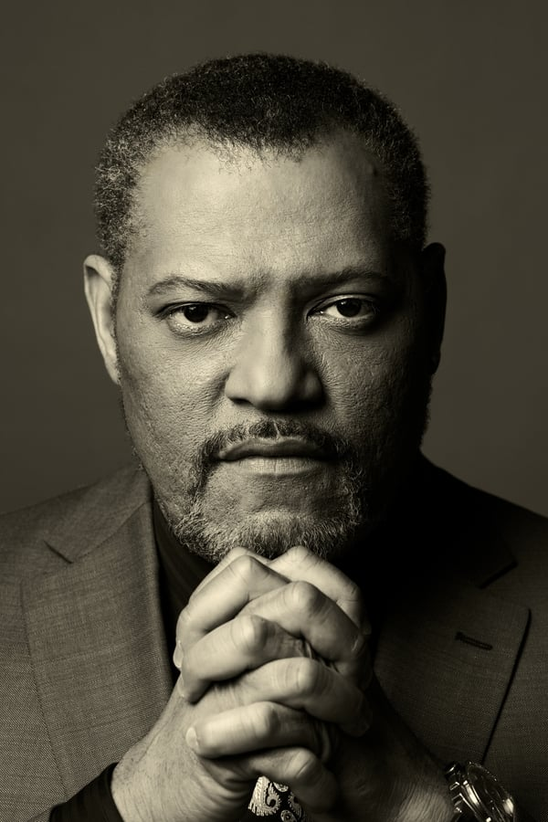

Sinopsis
Después de romper una regla sagrada del inframundo criminal —asesinar dentro del Hotel Continental—, John Wick se convierte en el objetivo de una cacería global. Con una recompensa de 14 millones de dólares por su cabeza y todos los asesinos del mundo tras él, John debe abrirse paso a través de Nueva York y más allá, mientras lucha por su supervivencia. Sin aliados y sin refugio, se enfrenta a enemigos implacables, al mismo tiempo que intenta encontrar una salida a la vida que juró dejar atrás.
Trailer
Personajes principales
Keanu Reeves como John Wick:

También conocido como Baba Yaga (el hombre del saco), John Wick es un legendario asesino a sueldo retirado, temido y respetado en todo el inframundo criminal por su eficacia letal, determinación inquebrantable y habilidades casi sobrehumanas en combate. Tras la muerte de su esposa, su vida da un giro trágico cuando un grupo de mafiosos irrumpe en su hogar, roba su auto y mata a su perro —el último regalo de su esposa. Este acto desata una ola de violencia y venganza que lo arrastra de nuevo a un mundo que creía haber dejado atrás. Con una presencia fría pero emocionalmente cargada, John es un hombre de pocas palabras, guiado por un fuerte código de honor. Letal con cualquier arma y experto en combate cuerpo a cuerpo, su enfoque meticuloso y su voluntad de hierro lo convierten en una fuerza imparable.
Halle Berry como Sofia:
Sofía es la gerente de un Hotel Continental en Casablanca y, aunque dejó atrás su vida como asesina, sigue estando conectada al inframundo de la Alta Mesa. John acude a ella en busca de ayuda, aprovechando una antigua deuda de sangre que ella no puede ignorar. Durante su participación, Sofía demuestra ser una combatiente excepcional, luchando codo a codo con John en una intensa secuencia de acción. Lo más llamativo de su estilo de combate es que lucha acompañada por dos perros entrenados que atacan bajo sus órdenes, sumando una capa visual brutal y coreográfica a sus escenas. A pesar de estar retirada, su lealtad, ferocidad y habilidades tácticas hacen de Sofía una aliada clave (aunque temporal) para John en su desesperada búsqueda de redención y supervivencia. ¿Quieres que esta descripción la adapte a un post de redes o la meta en una ficha de personaje
Ian McShane como Winston:
Winston es el gerente del Hotel Continental de Nueva York, una institución neutral dentro del mundo criminal regido por la Alta Mesa. Como figura de autoridad dentro del sistema, mantiene el equilibrio entre las reglas sagradas del hotel y las relaciones personales con los asesinos que lo frecuentan.
Laurence Fishburne como Bowery King:
 El Bowery King es el líder de una red de asesinos y espías disfrazada de comunidad de indigentes en Nueva York. Aunque su operación está al margen del poder formal de la Alta Mesa, su influencia y capacidad para moverse en las sombras lo convierten en una figura temida y respetada.
Mark Dacascos como Zero:
Zero es un asesino de élite contratado por la Alta Mesa para eliminar a John Wick. Es rápido, letal, y domina el combate con espadas, cuchillos y artes marciales con una precisión casi quirúrgica. A pesar de ser el enemigo principal de John en esta entrega, Zero también es un fanático admirador de Wick, lo que genera una relación extraña y hasta cómica entre ambos. Casi siempre acompañado por sus alumnos —también asesinos altamente entrenados—, Zero representa el contraste entre el respeto profesional y la obligación de matarlo. Su estilo de pelea es elegante y brutal al mismo tiempo, lo que hace que su enfrentamiento con John sea uno de los momentos más impactantes de la película. Zero no es solo un asesino: es un rival digno, un espejo distorsionado del propio John Wick.
Premios
- Premios Oscar 2020: Nominada a Mejor diseño de producción
- Premios BAFTA 2020: Nominada a Mejor diseño de producción
- Premios Critics' Choice 2020: Nominada a Mejor película de acción
Crítica
La crítica ha elogiado la película por su acción intensa, coreografía de peleas y cinematografía. Se destaca la actuación de Keanu Reeves y la dirección de Chad Stahelski, así como la expansión del universo de John Wick.
Ambientación
La película se desarrolla en una variedad de locaciones, desde Nueva York hasta Casablanca, y presenta una estética visual única que combina elementos de acción, neo-noir y fantasía. La cinematografía y el diseño de producción han sido aclamados por su estilo distintivo y su atención al detalle.